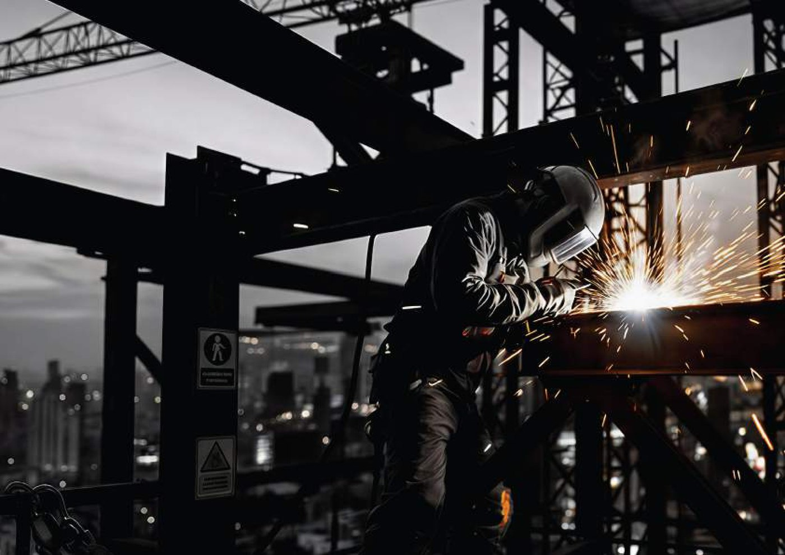

Steel Structures / PEB
Design, fabrication and installation of structural steel systems and pre-engineered buildings tailored to project requirements.

From engineering and fabrication to finishing, installation and strengthening, WELDEX delivers an integrated steel solution across every project stage.
Every WELDEX service connects engineering, execution and quality. Explore the cards to understand the scope of each solution.
Design, fabrication and installation of structural steel systems and pre-engineered buildings tailored to project requirements.
Robust solutions to organize, support and protect electrical and communication networks in industrial and technical environments.
Staircases, handrails, platforms, supports and architectural metal elements from design and detailing through installation.
Customized shading systems balancing performance, durability and the architectural character of the project.
Engineered systems that support safer excavation works and adapt to different project and site requirements.
Efficient lightweight sections for structural framing, roofing, cladding and related construction applications.
Metal finishing and surface protection focused on durability, environmental resistance and finish quality.
Stainless steel fabrication for architectural and industrial applications with durable, refined execution.
Solutions to improve existing structures, increase capacity and extend their service life.
Share your project requirements and the WELDEX team can discuss the scope and the most relevant solution.
Request a Quote →